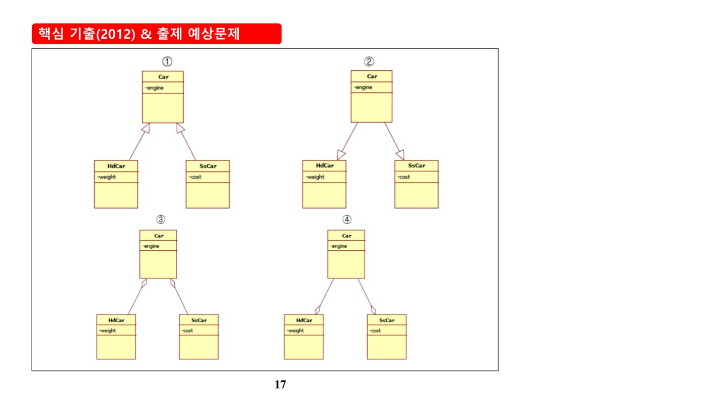
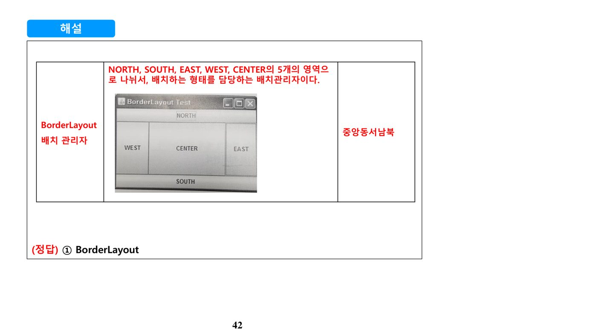
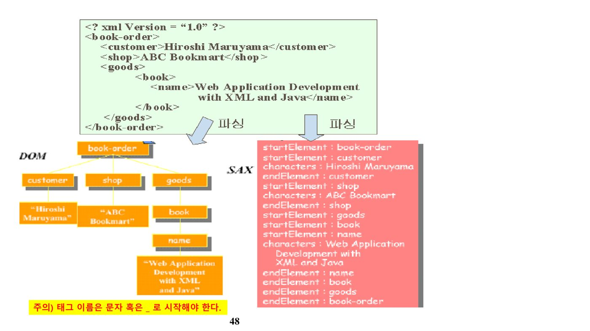
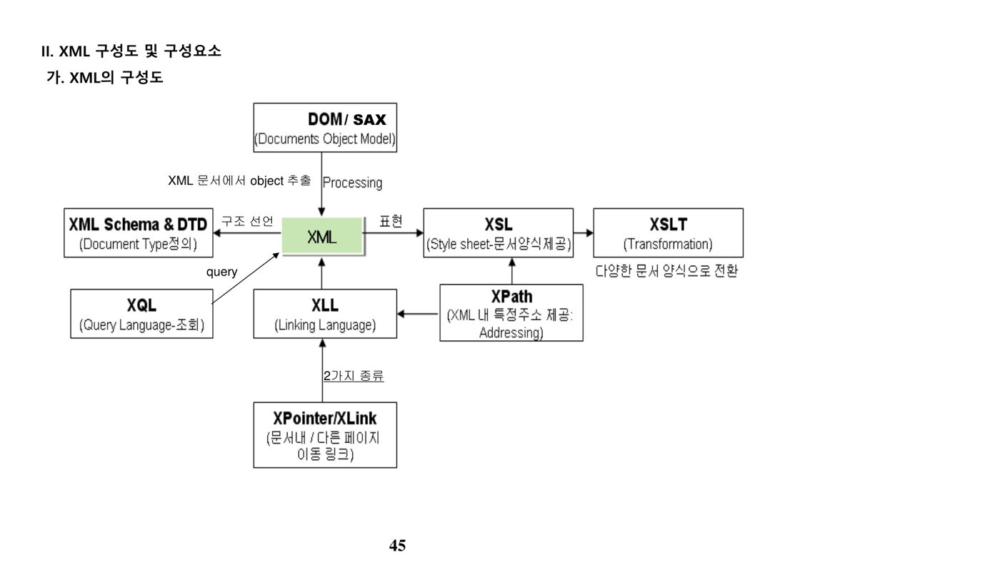

1. 프로그래밍 언어 기초와 코딩 규칙
가. SW Development 영역의 출제 비중
| 영역 | 출제 비중 |
|---|---|
| C 언어 | 상 |
| Java 언어 | 상 |
| GUI & GUI 프로그램 | 중 |
| XML | 중 |
| SAX | 하 |
| DTD | 하 |
나. MISRA-C 코딩 표준
다. C언어 재귀함수 계산 예제
다음과 같은 재귀함수가 주어졌을 때, recur_compute(5)의 결과를 구하는 유형이 자주 출제된다.
| 호출 | 계산 |
|---|---|
| recur_compute(1) | 1 ≤ 1 이므로 1을 리턴 |
| recur_compute(2) | (2 + 1) / 2 = 1 |
| recur_compute(3) | (3 + 1) / 2 = 2 |
| recur_compute(4) | (4 + 2) / 2 = 3 |
| recur_compute(5) | (5 + 3) / 2 = 4 |
※ 정수 나눗셈이므로 소수점 이하는 버림 처리된다는 점에 주의한다.
라. 흔히 발생하는 프로그래밍 오류 유형
| 오류 유형 | 설명 |
|---|---|
| 메모리 누수(Leak) | 동적으로 할당된 메모리를 해제하지 못해 사용 가능한 메모리 크기가 줄어드는 현상(예: malloc()으로 할당 후 free() 누락) |
| 중복 프리(Double Free) 선언 | free() 함수로 동일 메모리를 2번 해제하는 오류 |
| 별칭(Alias)의 사용 | C 언어의 구조체 선언 등에서 동일 메모리를 서로 다른 이름으로 참조할 때 발생 |
| 배열 인덱스 오류 | 배열 크기를 초과하는 인덱스에 접근하는 오류 |
마. Java 기초 문법
| 키워드 | 설명 |
|---|---|
| main 메소드 | 자바 프로그램은 public static void main(String[] args) 실행부터 시작 |
| new 키워드 | 클래스의 새 인스턴스를 만들고 메모리를 할당. 이때 호출되는 클래스와 이름이 같고 리턴형이 없는 메소드가 생성자(Constructor). 해제는 자바가 자동으로 Garbage Collector를 통해 처리 |
| extends | class BBB extends AAA는 BBB가 AAA를 상속한다는 의미로, AAA의 모든 멤버가 BBB의 멤버가 됨 |
| super | 상위 클래스 생성자를 호출(예: super(1,2,3);) |
| this | ① 인스턴스 자신을 의미(예: this.perID = perID;) ② 현재 클래스에 정의된 다른 생성자를 호출(예: this(파라미터, …);) |
2. 자바 객체지향, 예외처리, GUI, XML
가. 클래스 상속과 인터페이스
클래스 상속은 extends로 표현되며, 자바는 클래스 간의 다중상속을 지원하지 않는다(class C extends A, B는 컴파일 오류). 다중상속은 오직 인터페이스를 통해서만(implements) 지원된다.
| 구분 | 추상클래스 | 인터페이스 |
|---|---|---|
| 다중상속(자식클래스 다수 상속) | X(자식 지원 안됨) | O |
| 상수 | 지원 | 지원 |
| 변수 | 지원 | X |
| 메소드 | 일반 메소드 포함 | 모든 메소드가 추상 메소드 |

예를 들어 Car 클래스를 HdCar, SsCar가 각각 extends로 상속받는 구조가 클래스 다이어그램 표현 문제로 자주 출제된다 — 부모 클래스의 속성(private engine; 등)은 자식 클래스에 그대로 계승되고, 자식 클래스는 자신만의 속성(weight, cost 등)을 추가로 갖는다.
implements를 통해 여러 개를 동시에 구현(다중상속과 유사한 효과)할 수 있다.
나. static 변수와 클래스 변수 공유
자바에서 static 키워드가 붙은 변수는 메모리 할당이 딱 한 번만 이루어지며, 해당 클래스의 모든 인스턴스가 공유하는 변수가 된다. 예를 들어 클래스 내부에 private static Temp t;로 선언하고 getTemp() 정적 메소드로 그 인스턴스에 접근하도록 하면, new로 새로 만든 객체(obj1, obj2)는 서로 독립적인 값을 갖지만, getTemp()로 얻은 객체(obj3, obj4)는 static 변수 t를 공유하므로 누적된 값을 갖게 된다. 외부에서 static 변수에 접근하려면 public으로 선언하거나 싱글톤 패턴처럼 접근자 메소드를 제공해야 한다.
다. 예외처리(try~catch~finally, assert)
| 구문 | 설명 |
|---|---|
| try ~ catch ~ finally | finally 블록은 예외 발생 여부와 관계없이 항상 실행됨(예: 리소스 정리 코드) |
| assert(boolean) | 예외처리 내장 함수. boolean이 참이면 프로그램을 계속 실행하고, 거짓이면 AssertionError를 발생시킴. 단, assert는 기본적으로 비활성화되어 있어 실행 시 -ea 옵션을 주어야 동작함 |
try 블록에서 예외가 발생하면 해당 catch 블록이 실행된 후 반드시 finally 블록이 실행된다. 예외가 발생하지 않으면 try 본문 전체 실행 후 역시 finally가 실행된다. "Catch1 Catch2"처럼 출력 순서를 묻는 문제는 이 실행 순서만 정확히 따라가면 풀린다.
라. GUI 프로그래밍
GUI(Graphical User Interface)는 사용자가 마우스 등으로 화면의 메뉴를 선택해 컴퓨터와 상호작용하는 작업 환경이다. 자바는 초기 AWT(java.awt.*)에서 이후 Swing(javax.swing.*) 패키지로 발전했다. 버튼 클릭과 같은 GUI 이벤트 처리는 이벤트 리스너가 상태 변화를 통지받는 구조이므로 Observer 패턴과 가장 밀접하게 연관된다.
| Layout Manager | 설명 |
|---|---|
| FlowLayout | 컴포넌트를 왼쪽→오른쪽, 중앙 정렬로 배치. 한 줄에 다 배치할 수 없으면 다음 줄로 이어서 배치 |
| BorderLayout | NORTH·SOUTH·EAST·WEST·CENTER 5개 영역으로 나누어 배치. 특정 영역이 비면 인접 영역이 확장되어 채움 |
| GridLayout | 컴포넌트를 동일한 크기의 격자로 배치(크기 지정 담당) |

마. XML(eXtensible Markup Language)의 개요
| 언어 | 설명 |
|---|---|
| SGML | 1986년 표준. 다른 언어를 만들 수 있는 메타 언어(Standard Generalized Markup Language). 복잡하고 사용이 어려움 |
| HTML | 1990년대 등장. 단순하고 사용이 용이한 웹 문서 표준 언어. 확장이 되지 않는 한계 |
| XML | SGML의 실용적인 기능만 모은 부분집합이자, HTML의 장점과 SGML의 장점을 함께 취한 언어 |
바. DOM과 SAX 비교
| 구분 | DOM | SAX |
|---|---|---|
| 접근 방법 | 트리 구조 | Event Driven 구조 |
| 장점 | 문서 구조에 대한 풍부한 표현력, XML 문서의 생성·편집 가능 | 문서 크기와 무관하게 파싱 가능, 자체 데이터 구조 생성 가능, 일부분만 처리할 때 유리, 단순·고속 |
| 단점 | 메모리 요구량이 많고 처리 속도가 느림 | 문서 구조 파악에 불리하고, 문서 생성·편집 불가능 |
| 적용 분야 | 구조적 접근, 특정 부분 이동, 문서 정보 파악이 필요한 경우 | 문서 일부만 읽는 경우, 유효성 처리·데이터 변환, 엘리먼트 일부 추출 |

사. DTD와 XML Schema
DTD(Data Type Definition)는 문서의 구조와 컨텐츠를 정의해 XML 문서 구조를 명시적으로 선언하는 파일이다. 엘리먼트 타입 선언, 어트리뷰트 리스트 선언, 엔티티 선언, 표기(Notation) 선언의 4단계로 작성하며, 문서당 하나의 DTD만 결합 가능하고 확장이 어렵다는 한계가 있다. 이를 보완하기 위해 XML Schema(확장자 .xsd)가 등장했으며, 기존 DTD보다 복잡한 타입 선언과 새로운 데이터형 생성, Name Space 지원 등을 제공한다.
| 구분 | XML Schema | DTD |
|---|---|---|
| 작성 문법 | XML 1.0을 만족 | EBNF + 의사(Pseudo) 문법 |
| 구조 | 복잡함 | 상대적으로 간결함 |
| Name Space 지원 | 지원(문서 내 다수 사용 가능) | 지원 못함(문서 내 단일) |
| DOM 지원 | XML이므로 DOM 지원·이용 가능 | 지원 못함 |
| 동적 스키마 지원 | 가능(런타임 시 선택·변경 가능) | 불가능(읽기만 가능) |
| 데이터형 | 확장적인 데이터형 | 매우 제한적인 데이터형 |
| 확장성 | 완전히 객체지향적인 확장성 | 문자열 치환을 통해서만 확장 |

아. 관련 기출 서술형 문제
- Binary XML에 대하여 설명하시오. (정보관리 95회 1교시)
- 웹서비스 보안을 위한 XML 정보보호기술의 요소들을 다섯 가지로 설명하시오. (응용 77회 4교시)
- 자원기술프레임워크(RDF)의 정의를 내리고 XML과 비교 설명하시오. (응용 80회 3교시)
- XLL(XML Linking Language) (응용 75회 1교시)
- XML (응용 71회 2교시)
- DOM(Document Object Model)과 SAX(Simple API for XML)을 비교하여 설명하시오. (감리 90회 1교시)
📚 전체 기출·예상문제 (12문항) — 원문 수록
본 강좌 원본 PDF에 수록된 기출·예상문제를 빠짐없이 원문 그대로 정리했습니다. 정답·해설은 강의 원문 기준입니다.